“Post Status Notifier” WordPress Plugin Documentation by “ifeelweb.de” v1.0
“Post Status Notifier”
Created: 26/5/2013
By: Timo Reith
Email: timo@ifeelweb.de
Thank you for purchasing my theme. If you have any questions that are beyond the scope of this help file, please check the always up-to-date online documentation and feel free to email via my user page contact form here. Thanks so much!
Table of Contents
- Plugin installation
- First steps
- Create a notification rule
- Test your notification rule
- Notification rules in detail
- Logging
- Options
- Placeholders
- Sources and Credits
A) Plugin installation - top
The easiest way to install this plugin is through the WordPress plugin upload feature. Login with your WordPress admin account, then switch to menu “Plugins” and click “Add new”. On the next page (“Install Plugins”) select “Upload” from the horizontal menu.
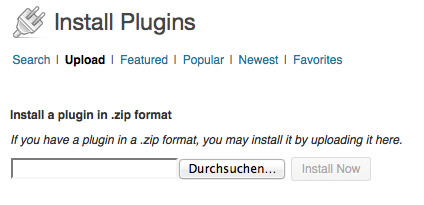Now use the file browser to select the file post-status-notifier.zip from your computer. Then click the button “Install Now”.
After the plugin was installed successfully, click the link “Activate Plugin”. You will be redirected to the plugins main page.
For more information about how to install WordPress plugins, read this article on the WordPress Codex: Manual Plugin Installation
B) First steps - top
After the successful installation, a new menu item Post Status Notifier appears in main menu section Settings.
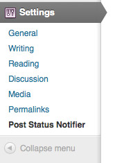If you click it, you will get to the overview page of the plugin.
There you will see some metaboxes. The upper metabox shows your notification rules. The lower metabox shows the newest log entries.
After installation there are no pre set-up notification rules. These are needed for the plugin to produce user notifications on post status changes.
C) Create a notification rule - top
To get informed about a status transition of a post, you have to create a rule for it. Change to the tab “Rules” and click “Create new rule”.
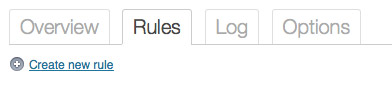The form for creating new rules will be loaded.
To get a quick idea of the possibilities you have with the notification rules, look at the three examples. These are represented by buttons to the right of the form. If you click an example button, the example values will be filled into the form automatically. You may change these values as you like.
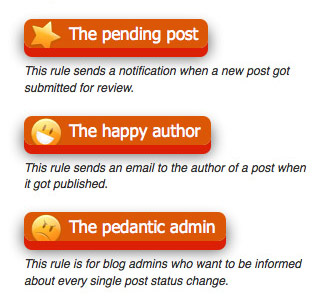For the first test, click the example button "The pending post". All required values will be filled in. Customize the subject and text if you want and fill in a valid Cc email. Then click the button “Add rule” at the end of the form. That’s it, your first rule is created!
D) Test your notification rule - top
To test the example rule "The pending post", log in your WordPress backend with a user who may not publish posts. If there is no such user, create a demo user with role “Contributor”. Write a new post with this user and click “Submit for Review”. Now the before created rule should send a notification email to the blog admin.
Note: If you are testing on you local computer, it may be that no emails are being sent.
To monitor what the plugin has done, open the overview page of the plugin again. There should be log entries in the metabox “Current log entries” now. They inform you about sent emails and matching rules.
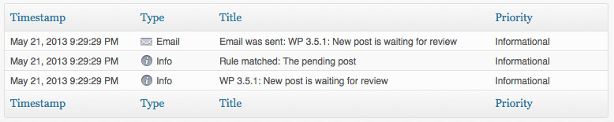On your Dashboard home page you will find a widget which shows the last log entries too.
E) Notification rules in detail - top
Creating new rules
To create a new rule, change to tab “Rules” and click the link “Create new rule”. You will get to the form for creating a new rule.
In the following all form fields will be explained.
A rule always requires a Rule name. This name will only be used for internal purposes of administration. The name will appear in the list table of all rules.
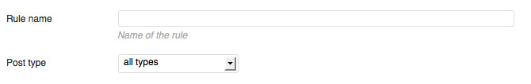You can decide if the rule should refer to all Post types or just to a special one. Choose “all types” or select an individual type. The plugin supports all custom post type of your blog.
The main focus of a rule is on Status before and Status after.
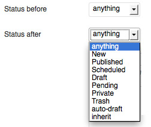With these two settings you decide on which status transition a rule will be executed. If for example an email should be sent on publication of a post, select “Pending” for Status before and “Published” for Status after. A special status is “anything”. This applies to every status. If you set both fields to “anything”, the rule will match every status transition of a post. This combination may be good for monitoring every status transition of your content.
The field Subject is for the subject text of your notification. You may fill in a maximum of 200 characters. All placeholders are supported (see Placeholders). Their purpose is to stand in for data that will be automatically inserted into the email notification. For a list of all placeholders, click the link “List of all placeholders” right to the form.

In the field Text you can write the text for the notification. Again all placeholders are supported.
For Recipient you can select the automatically determined recipient for the notification.
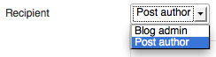For “Blog admin” the email address of the general blog settings will be used. For “Post author” the post author’s email address will be used.
Additionally you may fill in custom recipient addresses in the Cc text box. Multiple addresses must be separated by comma.
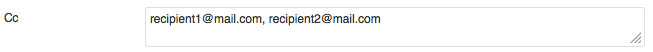Only active rules will considered on status transitions. If you want to deactivate a rule, remove the check mark on the “Active” checkbox.
With the option Email you can determine, if this rule should send emails or not. This is handy, if you just want to log status transitions.
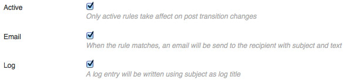If you want to create log entries, set the check mark on Log. Log entries will be written when a rule matches and when emails got sent.
When you set all options, click the button “Add rule”, to save the rule.
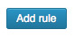Rule administration
After saving a rule, it will appear in the rule table (tab “Rules”).
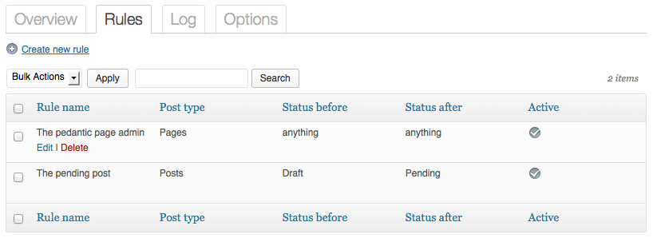From here you can manage your rules. When your cursor hovers a table row, you will see the links “Edit” and “Delete”. If you click “Edit” the rule will be loaded in the above explained form. Then you can change the rule settings and confirm by clicking the button “Update”.
To edit multiple rules at the same time, you can mark the check boxes of the respective table rows and select an action of the Bulk Actions. Available actions are “Delete” (delete all marked rules), “Activate” and “Deactivate” (activate / deactivate the marked rules).
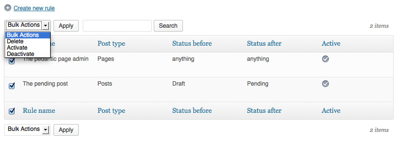F) Logging - top
In the “Log” section you will see a table containing all log entries the plugin rules have generated.
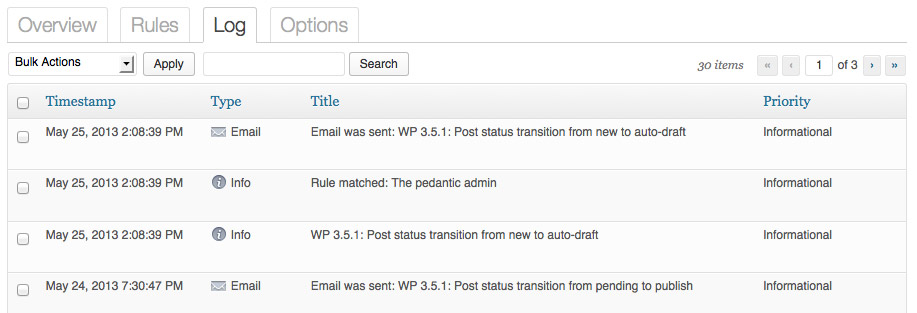List navigation
If you want to navigate through the list, you may use the pagination elements in the right above or under the table. Additionally you may change the maximum items per page in the “Screen Options” tab. If you are looking for something special you can use the search box.
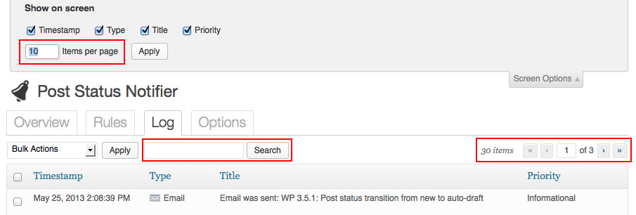Log details
If you hover your mouse cursor over a row, you will see the link “Show details”.
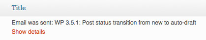If you click it, you will see the information stored for this log entry. If the entry is of type “Email”, you will see the details about the sent email.
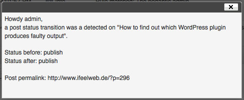If it is of type “Info” you will see all settings of the matching rule and the list of placeholders including theirs values.
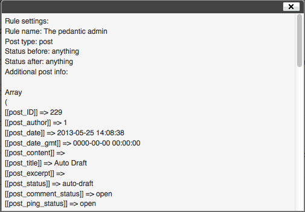Log administration
If you want to delete log entries, select the relevant list items by clicking the check box left to the row and select “Delete” from the “Bulk Actions” drop down.
There are other useful “Bulk Actions” when it comes to clean up your log entries. “Clear type ‘Email’” will delete all log entries of type “Email”, “Clear type ‘Info’” will delete all entries of type “Info” and finally “Clear complete log” will delete all log entries.
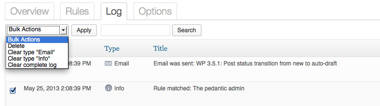G) Options - top
In the options section you can set up, if the post status “inherit” should be ignored by the plugin. This status is used by WordPress internally when revisions of posts get created automatically.
Furthermore you can activate that rule matches should be logged generally. With this option set, every time one of your rules gets executed, a log entry will be written.
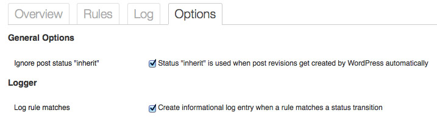H) Placeholders - top
This is a list of all placeholders that are supported for the fields subject and text of notification rules.
| Placeholder | Description |
|---|---|
| [author_ID] | User ID of the author |
| [author_description] | The author’s description |
| [author_display_name] | The author’s display name |
| [author_email] | The author’s email |
| [author_firstname] | The author’s firstname |
| [author_lastname] | The author’s lastname |
| [author_login] | The author’s login name |
| [author_nickname] | The author’s nickname |
| [author_registered] | The registration date and time of the author |
| [author_url] | The author’s homepage URL |
| [blog_admin_email] | The email of the blog admin as defined in Settings / General |
| [blog_description] | The blog description as defined in Settings / General |
| [blog_name] | The blog name as defined in Settings / General |
| [blog_url] | The blog URL as defined in Settings / General |
| [blog_version] | The WordPress version |
| [blog_wpurl] | The blog URL as defined in Settings / General |
| [current_user_ID] | The ID of the current user (the user who changed the status) |
| [current_user_description] | The description of the current user (the user who changed the status) |
| [current_user_display_name] | The display name of the current user (the user who changed the status) |
| [current_user_email] | The email of the current user (the user who changed the status) |
| [current_user_firstname] | The firstname of the current user (the user who changed the status) |
| [current_user_lastname] | The lastname of the current user (the user who changed the status) |
| [current_user_login] | The login name of the current user (the user who changed the status) |
| [current_user_nicename] | The nicename of the current user (the user who changed the status) |
| [current_user_nickname] | The nickname of the current user (the user who changed the status) |
| [current_user_registered] | The registration date and time of the current user (the user who changed the status) |
| [current_user_status] | The status of the current user (the user who changed the status) |
| [current_user_url] | The homepage URL of the current user (the user who changed the status) |
| [post_ID] | The ID of the post |
| [post_author] | User ID of the author |
| [post_comment_count] | Total number of comments of the post |
| [post_comment_status] | The comment status of the post (like “open”) |
| [post_content] | The content of the post |
| [post_content_filtered] | The filtered content of the post |
| [post_date] | The date of the post |
| [post_date_gmt] | The GMT date of the post |
| [post_excerpt] | The post’s excerpt |
| [post_filter] | The post filter (like “raw”) |
| [post_guid] | The post’s internal URL (like http://your-wp.com/?p=193) |
| [post_menu_order] | The post’s menu order (integer) |
| [post_mime_type] | The mime type of the post (like “image”, “audio”, “video”) |
| [post_modified] | The modification date of the post |
| [post_modified_gmt] | The modification GMT date of the post |
| [post_name] | The post’s slug name |
| [post_parent] | The ID of the parent post |
| [post_password] | The post’s password |
| [post_ping_status] | The post’s ping status |
| [post_pinged] | |
| [post_status] | The post status (like “publish”, “pending” etc.) |
| [post_status_after] | The post status after the transition |
| [post_status_before] | The post status before the transition |
| [post_title] | The post title |
| [post_to_ping] | |
| [post_type] | The type of the post (like “post”, “page” etc.) |
I) Sources and Credits - top
This is a list of assets used in this plugin and their licenses.
PHP
- Zend Framework classes: New BSD License (http://framework.zend.com/license/new-bsd)
- Twig: New BSD License (http://twig.sensiolabs.org/license)
Images
The following is a list of image paths included in this plugin with footnotes to their license.
- skin/default/icons/cross.png: (1)
- skin/default/icons/mail.png: (1)
- skin/default/icons/pencil.png: (1)
- skin/default/icons/premium.png: (1)
- skin/default/icons/tick.png: (1)
- skin/default/icons/false.png: (2)
- skin/default/icons/help.png: (2)
- skin/default/icons/info.png: (2)
- skin/default/icons/minus.png: (2)
- skin/default/icons/plus.png: (2)
- skin/default/icons/reload.png: (2)
- skin/default/icons/true.png: (2)
- skin/default/icons/warning_16.png: (3)
- skin/default/icons/warning_16.png: (3)
- skin/default/icons/ajax-loader.gif: (5)
- skin/default/icons/ajax-loader-bar.gif: (5)
- skin/default/icons/external-link.png: (6)
- skin/default/icons/handshake.png: (7)
- skin/default/icons/lifesaver.png: (8)
- admin/img/icon-32-grey.png: (9)
- admin/img/happy_author.png (10)
- admin/img/pedantic_admin.png (10)
- admin/img/pending_post.png (10)
(1): Pixlsby.me (http://pixlsby.me/): All sets can be used both commercially and for personal use.
(2): Icons4Coffee (http://www.icons4coffee.com/): All icons are Royalty Free and can be used for both commercial and personal purposes.
(3): WooFunction: 178 Amazing Web Design Icons (http://www.woothemes.com/2009/09/woofunction-178-amazing-web-design-icons/): GNU General Public License.
(4): WooCons #1: 170 Free Web Icons (http://www.woothemes.com/2010/08/woocons1/): GNU General Public License.
(5): http://www.ajaxload.info/ Generated gifs are totally free for use
(6): Shapes4FREE: 100 External Link Web Icons (http://www.shapes4free.com/vector-icons/external-link-icons/): free for personal and commercial use (http://www.shapes4free.com/license/)
(7): 24x24 Free Pixel Icons by IP Ivlichev Victor Petrovich, License: Creative Commons (Attribution 3.0 Unported) (http://www.iconfinder.com/icondetails/132302/24/handshake_icon)
(8): Elegant Themes Icon Pack (http://www.elegantthemes.com/blog/resources/elegant-themes-icon-pack-for-free): dual licensed under the GPL and MIT
(9): Communication icons by Dutch Icon (http://www.dutchicon.com/): Basic License (http://www.iconfinder.com/licenses/basic)
(10): Lin by Everaldo Coelho (http://www.iconfinder.com/iconsets/lin#readme): GPL
Once again, thank you so much for purchasing this plugin. As I said at the beginning, I'd be glad to help you if you have any questions relating to this plugin. No guarantees, but I'll do my best to assist. If you have a more general question relating to the plugins on CodeCanyon, you might consider visiting the forums and asking your question in the "Item Discussion" section.
Timo Reith